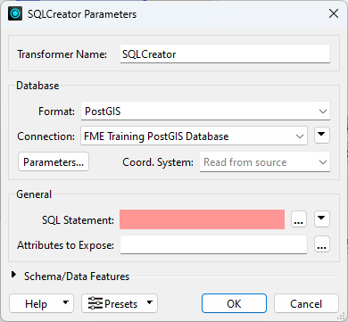
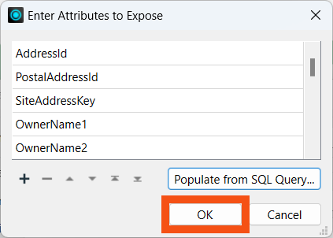

This exercise uses a PostGIS database hosted on Amazon RDS or an Esri Geodatabase. You can use either one (no extra license is required). Please open the correct workspace and follow the instructions for your chosen format.
After completing this lesson, you’ll be able to:
Public members often call the city to ask what day their garbage collection is. To help, the city has an internal system hosted on FME Flow. Planning department members can look up an address ID and enter it into a published parameter, and the system retrieves the garbage pickup information.
The system works but is slower than it should be. Let’s run this short exercise to discover why.
This exercise uses a PostGIS database hosted on Amazon RDS or an Esri Geodatabase. You can use either one (no extra license is required). Please open the correct workspace and follow the instructions for your chosen format.
You can skip this step while taking a Safe Software-hosted training course. The Database Connection FME Training PostGIS Database should already exist on your training machine.
To use a PostGIS database as a source requires a connection to it. If you are using Geodatabase instead of PostGIS, you can skip to step 2.
In a web browser, visit http://fme.ly/database - this shows the parameters for a PostGIS database running on Amazon RDS.
Start FME Workbench (2024.1 or later) and select Tools > FME Options from the menu bar.
Click the Database Connections category icon and the [+] button to create a new connection. In the "Add Database Connection" dialog, enter the connection parameters obtained through the web browser.
Give the connection a name (if you call it FME Training PostGIS Database, it will match the starting workspace) and click Save.

Then click OK to close the FME Options dialog.
Open the starting workspace of your choice (PostGIS or Esri Geodatabase) in FME Workbench (2024.1 or later).
The workspace looks like this:

A published parameter accepts an address ID. The postal address database is read and filtered against this ID. The chosen address is used in a spatial overlay against garbage zones. The result is formatted in HTML and written with a Text File writer.
To get a comparison, run the workspace. Use Prompt Mode to be prompted for an address ID. A suitable address ID is 127209 (PostGIS) or 6135 (Geodatabase).
The result, in a web browser, is this:

The performance will read something like this:
PostGIS
INFORM|FME Session Duration: 4.9 seconds. (CPU: 0.4s user, 0.0s system) INFORM|END - ProcessID: 32380, peak process memory usage: 166800 kB, current process memory usage: 115728 kB
Geodatabase
INFORM|FME Session Duration: 4.2 seconds. (CPU: 0.6s user, 0.2s system)
INFORM|END - ProcessID: 31808, peak process memory usage: 167356 kB, current process memory usage: 111968 kB
The Geodatabase is quicker because it reads from your file system, not a remote database.
Neither PostGIS nor Geodatabase has a WHERE clause for the reader itself, but their feature types do. So, inspect the properties for the PostalAddress reader feature type, and in the WHERE Clause parameter, enter:
PostGIS
"AddressId" = $(AddressID)
Geodatabase
OBJECTID = $(AddressID)
For PostGIS, notice the lowercase "d" in the "Id" part of the field name! Also, note the difference in the use of quotes between the two formats.
Now that we have the WHERE clause, the Tester transformer is no longer required; delete it.
If you collapse the bookmark and then delete the bookmark, it deletes both the bookmark and the transformer in one step:
Re-run the workspace. This time, FME only reads one feature from the database. The performance improves accordingly:
PostGIS
INFORM|FME Session Duration: 2 seconds. (CPU: 0.3s user, 0.0s system)
INFORM|END - ProcessID: 32740, peak process memory usage: 125512 kB, current process memory usage: 113872 kB
Geodatabase
INFORM|FME Session Duration: 2.3 seconds. (CPU: 0.1s user, 0.0s system)
INFORM|END - ProcessID: 25568, peak process memory usage: 119420 kB, current process memory usage: 109508 kB
Memory usage hasn’t improved, but the translation ran faster.
SQL transformers can be faster than using database readers.
Add an SQLCreator to your canvas above the PostGIS reader.

Double-click it to open its parameters. Select PostGIS for the Format and FME Training Database Connection for the Connection.

Click the ellipsis button next to SQL Statement. Enter the following SQL statement:
SELECT * FROM "public"."PostalAddress" WHERE "AddressId" = $(AddressID)
This simple statement reads all the features in the PostalAddress table that have an AddressId matching the user parameter value. This statement accomplishes the same thing as the reader parameter, so its speed will ultimately be similar. However, reading directly with SQL in more complex situations lets the database do the work.
Click OK.
We could run the translation at this point, but all the incoming attributes from the database would be unexposed. To ensure they get exposed, click the ellipsis button next to Attributes to Expose. Then click Populate from SQL Query...

For this SQL statement, remove the WHERE clause.
SELECT * FROM "public"."PostalAddress"
Click OK. The Enter Attributes to Expose dialog will be populated with all the attributes in the PostalAddress table. These will now be exposed properly.

Click OK twice to finish configuring the SQLCreator. Connect its Result port to the PointOnAreaOverlayer Point port and disable the PostGIS reader feature type:

Run your workspace. Performance will probably be similar, but this route could save valuable time if the query were more complex.
INFORM|FME Session Duration: 2.2 seconds. (CPU: 0.2s user, 0.1s system)
INFORM|END - ProcessID: 27756, peak process memory usage: 128100 kB, current process memory usage: 116328 kB